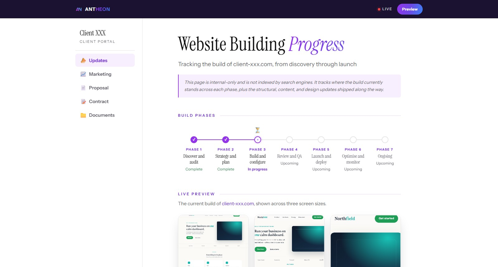

We engineer the systems behind how you run.
We design, build, and automate the operational backbone of growing companies. Custom CRMs, connected systems, and AI workflows that turn manual, messy processes into ones that run themselves.
Systems and websites we've engineered for


Antheon is a systems and process engineering firm for medium to large businesses. We do more than build websites: we map how a company actually operates, then design and build the systems behind it, including custom CRMs, internal tools, and AI-powered automations that remove manual work. Think of us as process engineers for your operations. We identify where your SOPs slow you down, simplify them, and rebuild them as systems that run reliably as you scale.
We don't just hand you tools. We engineer the system they run inside.

Most agencies deliver a website or a single automation and walk away. That leaves the hard part, how it all fits together, on your plate.
Antheon works like an architect or a process engineer. We start with your current setup, systems, and SOPs, find where the friction and waste are, then redesign each process and rebuild it as one connected system with AI applied where it earns its place.
The result is not a pile of software. It is operational infrastructure that lets your team do more without hiring for every new bottleneck.
Capabilities that replace busywork with systems.
Each capability is delivered as part of one engineered system, not as a disconnected service. We combine them based on where your operation actually needs support.
Custom CRM Builds
A CRM shaped around your real sales and service process, not a generic template you have to bend your team around.
- Pipeline and stage design
- Contact and deal automation
- Tool and inbox integrations
Process Automation
We remove the repetitive, manual steps between your tools so work moves on its own instead of waiting on someone.
- Cross-tool workflow automation
- Data sync and single source of truth
- Approval and handoff logic
AI-Powered Workflows
AI applied where it saves real hours: triaging, drafting, summarising, and routing, wired directly into your systems.
- AI intake and routing
- Document and reply drafting
- Smart summaries and reporting
Custom Systems and Tools
Internal dashboards, portals, and tools built for the specific job your off-the-shelf software can't quite do.
- Internal dashboards and portals
- Client and team-facing tools
- Reporting and visibility layers
Process and SOP Engineering
We audit how work flows today, find the friction, and redesign each SOP so it is simpler before we ever automate it.
- Operational audit and mapping
- Bottleneck and waste analysis
- Redesigned, documented SOPs
Custom Website and Web Systems
High-performance sites that plug into the rest of your operation, so leads and data flow straight into your system.
- Conversion-focused builds
- CRM and automation connected
- Speed and SEO optimised
A look at what we've shipped.
Every site we build plugs straight into the CRM and automations behind it. Here's a taste of the work, see the full lineup on our projects page.
From audit to a system that runs itself.
A clear, engineered path from understanding your operation to handing back one that runs with far less manual effort.
Audit
We map your current setup, systems, and SOPs, then pinpoint exactly where time, data, and money leak out.
Design
We simplify each process first, then architect the system: what connects to what, and where AI belongs.
Build
We build the CRM, automations, and custom tools, integrated into one system rather than scattered parts.
Optimise
We test against real usage, refine the workflows, and document everything so your team owns it with confidence.
Your own dashboard, for the whole build.
Every project ships with a private client dashboard, so you are never left wondering where things stand or digging through email for the latest file.

A phase-by-phase timeline shows exactly where your project stands, alongside a live preview of the actual site across desktop, tablet, and mobile as we build it.
Your proposal, signed contract, and reference documents live in the same dashboard as the build itself, so nothing gets buried in an inbox.
Each shipped change is dated, versioned, and explained in plain language, from a small fix to a new feature, so you always know what changed and why.
Bring us your current setup, systems, and SOPs. We will show you exactly what to simplify, what to connect, and where AI earns its place.
Ways to work with Antheon.
Every operation is different, so scope and investment are shaped around your systems. These are the common starting points. Your exact quote comes from the audit.
The starting point. A full read of your operation and a concrete plan.
- Operational and SOP mapping
- Bottleneck and waste analysis
- Prioritised systems roadmap
- Clear build scope and quote
We design and build the connected system: CRM, automations, and tools.
- Everything in Systems Audit
- Custom CRM and integrations
- Process and workflow automation
- AI wired into real workflows
- Documentation and team handover
We stay on as your systems team as the business keeps evolving.
- Continuous optimisation
- New automations and tools
- Monitoring and support
- Priority build capacity
What businesses ask before working with us.
Antheon is a systems and process engineering firm. We build the operational infrastructure behind medium to large businesses: custom CRMs, internal tools, process automations, and AI-powered workflows.
Unlike a typical agency that ships a single website or one automation, we look at how your whole operation runs, redesign the processes that slow you down, and rebuild them as one connected system. The goal is fewer manual hours, cleaner data, and a business that can grow without adding chaos.
Off-the-shelf software gives you tools, but you are still left to wire them together and force your team to adapt. A VA adds hands to a manual process rather than removing the manual work itself.
Antheon engineers the system that sits underneath. We simplify the process first, then build automations and custom tools so the work moves on its own. You end up needing fewer manual interventions, not more people to run them.
We apply AI only where it saves real time inside a real workflow, such as triaging incoming requests, drafting replies and documents, summarising long threads, or routing work to the right person automatically.
AI is wired directly into your CRM and systems rather than sitting in a separate tab your team forgets to open. We are deliberate about it: if a simpler automation does the job better, we use that instead.
No. Most businesses come to us precisely because their processes have grown messy over time. That is what the Systems Audit is for.
We map your current setup, systems, and SOPs, identify where the friction and waste are, and hand you a clear picture of what to simplify and connect. You do not need clean documentation to begin. You just need to let us look under the hood.
Because every operation is different, investment and timeline are scoped to your specific systems. A focused CRM build is very different from a full multi-tool operation with AI in the loop.
The Systems Audit is the fixed, scoped starting point. From there we give you an exact build scope, cost, and timeline before any work begins, so there are no surprises. Book an audit and we will define it together.
You do. Everything we build lives in your accounts and your infrastructure, and we document it so your team can run and understand it.
Many clients keep us on as an ongoing partner to extend and optimise the system over time, but that is a choice, not a lock-in. The system is yours from day one.
Let's engineer your operation.
Book a systems audit or reach out directly. Tell us how your business runs today and we will show you what it could run like.